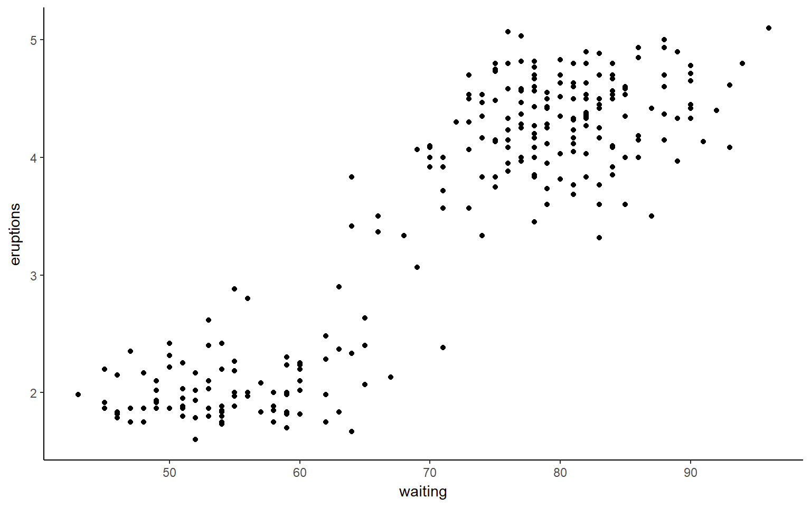
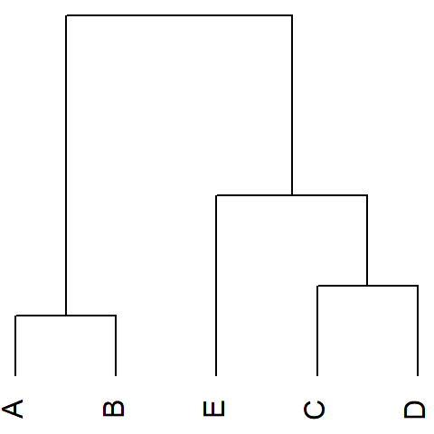
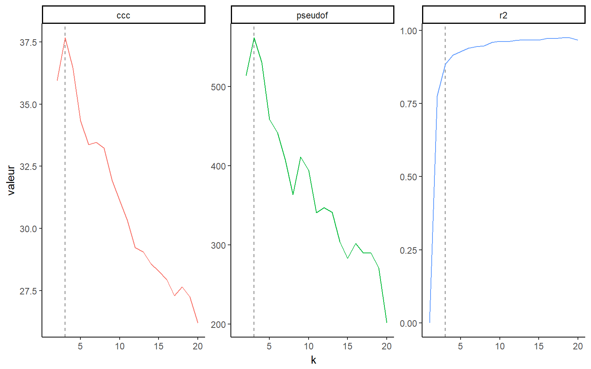
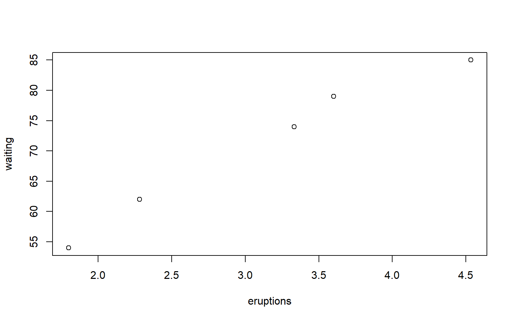
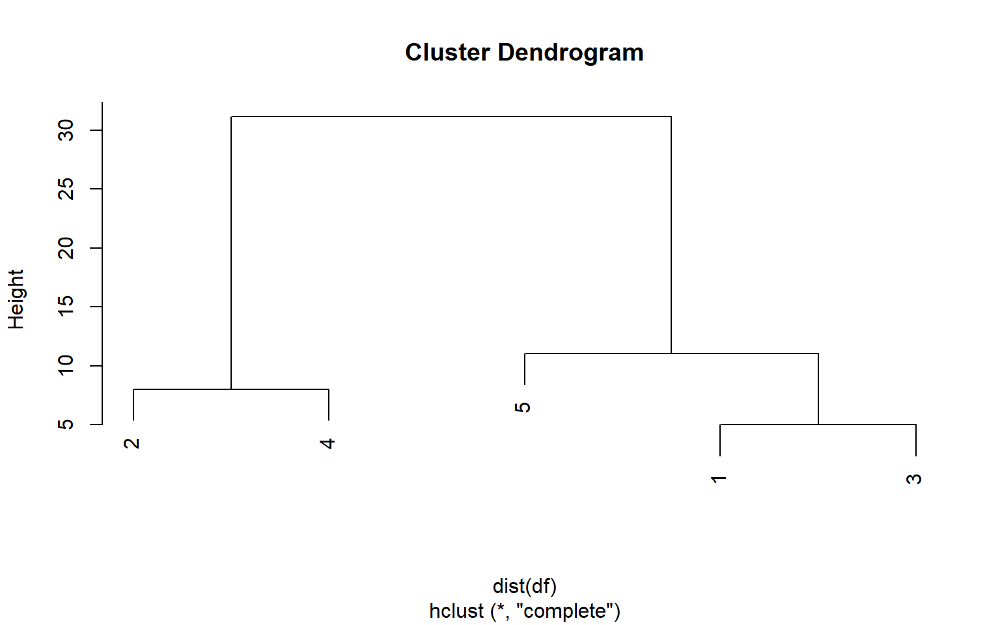
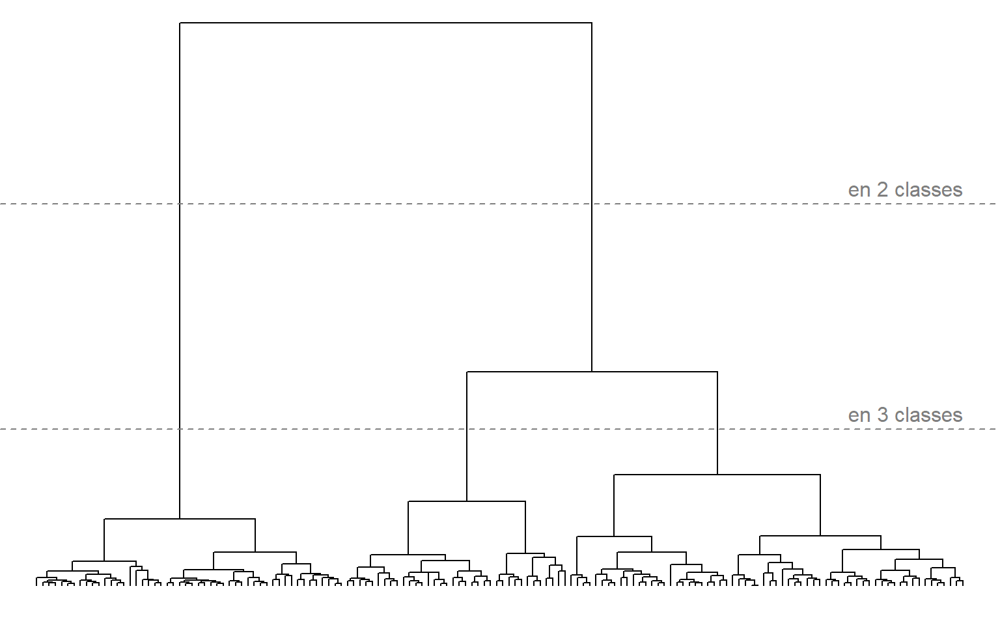

Objectif sur l’exemple

FX Jollois
faithful dans R
Nécessité de définir des critères de bonne classification et d’avoir des algorithmes performants, et optimisant la recherche d’une partition
Considérons \(X=\{a,b,c,d,e\}\).


Recherche de d’une classification hiérarchique = recherche d’une ultram�trique.
Connaissant une métrique sur \(X\), en déduire une ultramétrique aussi proche que possible de la métrique de départ
Algorithme
Problème
Les données

La matrice de distance initiale
## 1 2 3 4
## 2 25
## 3 5 20
## 4 17 8 12
## 5 6 31 11 23L’arbre obtenu (lien complet)

L’ultramétrique obtenu
## 1 2 3 4
## 2 31
## 3 5 31
## 4 31 8 31
## 5 11 31 11 31